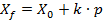
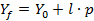
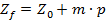

The routine to calculate the intersection point (after we have got the path length of the ray) is based on the formulas like



Here
Created with the Personal Edition of HelpNDoc: Easy CHM and documentation editor